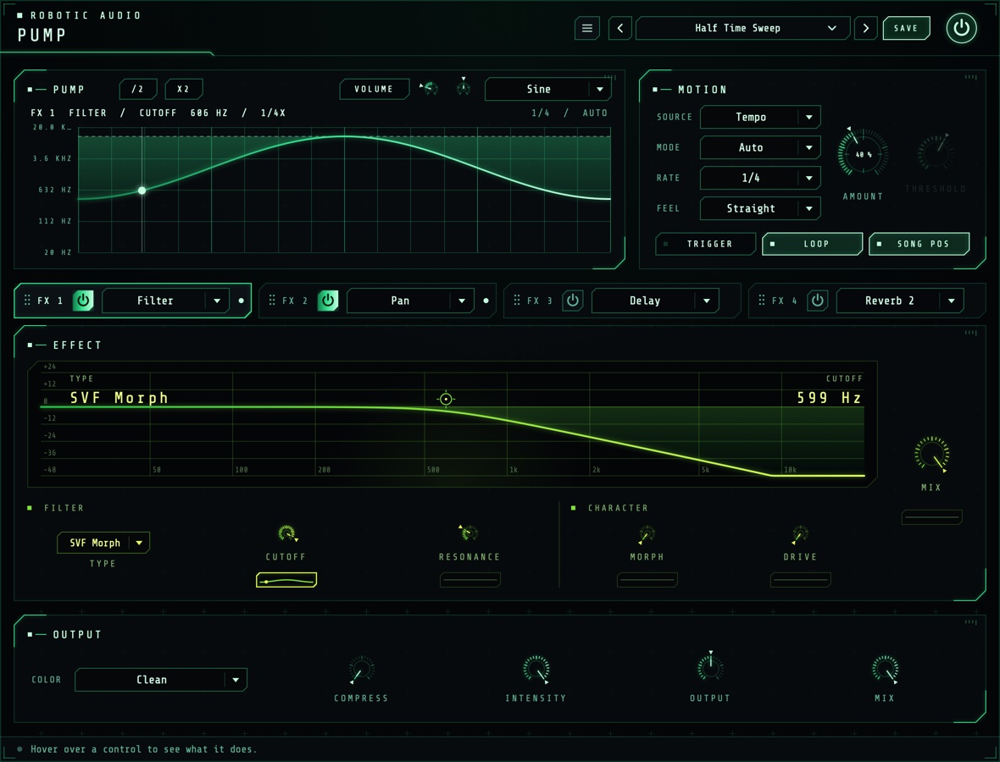

Pump
Pump ducks your sound in time with the song, the way a kick's sidechain does, with or without a sidechain. Pick one of 21 shapes and a rate, set how deep it goes, then put up to four effects after it and let any of their settings pump along: a filter that breathes, echoes cut on the beat, a reverb that blooms in the gaps, a tape that brakes on every kick.
- 21 pump shapes
- Locked to the song, notes or a sidechain
- Four effect slots, 20 effects
- Every effect setting can pump
- Each lane its own depth, phase and shape
- Rests in silence
- AU · VST3 · Standalone

Quick start
From a steady pad to a pumping one in a minute.
Insert it
On a pad, a bass, a bus. Press play: the Default preset ducks the sound on every beat and swells back up.
Shape the pump
Pick a Shape above the display (or scroll over it) and set AMOUNT, or drag the display up and down.
Add an effect
Switch on a slot in the tabs (the power button) and choose its effect. Its own view appears below, with a small lane under every knob.
Pump a setting
Drag a lane up or down: that setting now moves with the pump. Click the lane to see it in the big display and set its phase and shape.
The window
The display and Motion on top, the effects below, Output along the bottom.
- Header
- The preset bar (previous, next, the list, SAVE), the power button (bypass) and the menu (three lines) with this manual. Click the logo for the version and credits. With an AI key, a >_ beside the preset bar opens the designer.
- Display
- One cycle of the volume, or of the lane you last clicked, with a line where the cycle is now and a dot at the value it really gives. With the volume, GAIN reads the gain now; drag up or down for Amount (down pumps harder), double-click to reset it, scroll to change the shape. /2 and X2, just after the card's title, halve or double the tempo (the Rate), or a lane's speed while a lane is shown. With a lane, the header names it (FX 1 FILTER / CUTOFF 10.9 KHZ) and the title row shows VOLUME (back to the volume), the lane's Depth and Phase, and its Shape, with its speed in the header (1/4X); see Lanes. On the right: the rate, and the mode (and WAITING FOR TRIGGER while a Trig mode waits), or with a sidechain source the source and the key's level (KEY −14 DB, (OWN INPUT) when nothing is connected to the sidechain).
- Motion
- Source, Mode, Rate, Feel, Amount, Threshold, and the TRIGGER, LOOP and SONG POS buttons. See Motion.
- Slot tabs
- FX 1 to FX 4: each its grip, power button and effect menu, and a dot while any of its lanes pump. Click a tab to show that slot below; drag it by its grip (or its background) onto another tab to move the slot there, its settings and lanes with it, the slots between shifting along.
- Effect
- The shown slot's effect: its live display (which moves as its lanes move it), its controls in groups, a lane under each one that can pump, and the slot's MIX with its own lane. See Effects.
- Output
- Color, Compress, Intensity, Output and Mix. See Output.
- Tooltip strip
- Along the bottom: what the control under the mouse does.
In the standalone app a keyboard strip sits under the window: its notes trigger the pump just as MIDI notes do.
Signal flow
One pump moves everything.
The pump is a value for every sample: how far the sound is ducked right now. It sets the volume (through Color), and every lane reads the same cycle, each at its own phase and shape, to move its effect setting. Lanes move their settings every 32 samples, smoothed so nothing steps or clicks; the volume's drops are softened over 1.5 ms.
The effects come after the volume's duck, in slot order, so a delay or reverb rings on into the gaps the pump leaves. Everything runs 2 ms behind the input, so Compress can see peaks coming; the plugin reports this to the host, which lines the track up again. While silence comes in and every echo and tail has died away, Pump rests and costs nothing.
Motion
When it pumps, how fast and how deep.
- Source
- What drives the pump. Tempo plays the shape in time with the song, by Mode, Rate, MIDI notes and TRIGGER. Sidechain plays one cycle of the shape (at Rate) on each hit on the sidechain input that rises over Threshold, then rests open until the next. Follow has no shape: it ducks by how far the sidechain goes over Threshold (24 dB over ducks all the way), letting go over half a cycle of Rate. With nothing connected to the sidechain, Pump keys from its own input. Mode, TRIGGER, LOOP and SONG POS only play the Tempo source and are greyed out for the others.
- Mode
- Auto pumps all the time. Trig rests low (ducked) and swells up while it's triggered, then drops back when you let go. Trig Inv rests open and ducks while it's triggered. Trigger with the TRIGGER button or any MIDI note.
- Rate
- How long one cycle of the shape takes, as a note value. 1/4 is one beat, 1/1 one bar. In Follow, how fast the duck lets go. 8/1 … 1/64
- Feel
- Straight, Dotted (one and a half times as long) or Triplet (two thirds).
- Amount
- How deep the volume pumps. A touch adds movement; 50 % ducks to −12 dB at the deepest point; 100 % reaches silence. Turn it to 0 to pump only the effects. 0 … 100 %
- Threshold
- How loud the sidechain has to get, for Sidechain and Follow. A hit counts when the key rises over it, and the next one only once it has fallen 6 dB below it and 40 ms have passed, so a flam or a ringing kick isn't two hits. Watch KEY in the display to set it. −60 … 0 dB
- Trigger
- Hold it to play the pump in the Trig modes. In Auto it starts the cycle again (with Song Pos or Loop off; following the song, it has nothing to restart). It isn't saved with presets or sessions.
- Loop
- On, the shape repeats. Off, it plays once from each start (a trigger, a note, or pressing play) and then stays where the shape ends.
- Song Pos
- On, the cycle follows the song's position: start playback anywhere and the pump is where it would have been from the start, and notes don't move it. Off, Pump keeps its own time, and the first note after silence (or pressing play) starts the cycle again. With Loop off it has no effect and is greyed out.
Using the sidechain
Pump has a second, stereo input for the key. In your host, send the kick (or any track) to it: in Ableton Live, open the Sidechain section of Pump's device and choose the track; in Logic, choose it from the Side Chain menu at the top of the plugin window; in other hosts, route a send or bus to Pump's sidechain input. Then set SOURCE to Sidechain or Follow and bring THRESHOLD down until each kick shows. The key only drives the pump; it is never heard.
Shapes
21 ways to move over one cycle.
Each shape says how far the sound ducks over one cycle; Amount sets how deep that is. Most drop on the beat and come back up, like a sidechained kick.
| Shape | Moves |
|---|---|
| Classic | Drops on the beat and swells back over about two thirds of the cycle: the sidechain pump. |
| Deep | The same, but slower to recover, almost to the end of the cycle. |
| Ramp | Rises in a straight line from the bottom to full. |
| Snap | A short, sharp dip right on the beat. |
| Offbeat | Dips halfway through the cycle instead of on the beat. |
| Swell | A smooth S-curve from the bottom up. |
| Hold | Stays down for almost a third of the cycle, then comes up quickly. |
| Sine | A smooth wave: down at the start and end, full in the middle. |
| Triangle | Straight lines down to full in the middle and back. |
| Kick | A dip with a small second bump, like a kick's bounce. |
| Steps | Climbs back up in steps. |
| Flutter | Four fast dips that fade away over the cycle. |
| Fall | The reverse of Ramp: from full down to the bottom. |
| Gate | Off for the first half, on for the second. |
| Bounce | Dips that come back again and again, smaller each time. |
| Stutter | Two quick chops in the first half, then open. |
| Wave | A rounded wave with a second ripple. |
| Chop | Four hard gates per cycle. |
| Seethe | A restless, uneven wobble that repeats every cycle. |
| Quake | A long, deep duck with a fast tremor through it. |
| Shuffle | A dip on the beat and a smaller, swung one two thirds of the way through. |
Lanes
Any effect setting, pumping.
Under every effect knob that can move (and under each slot's MIX) sits a small lane: a picture of how the pump moves that setting over one cycle, flat while it doesn't. A lane rests at the knob's own value and moves away from it with the pump: most at the top of the shape (where the volume ducks deepest), not at all at the bottom.
- On a lane
- Drag up or down to set its depth (up moves the setting up). Click it to show it in the big display, where it lights up. Double-click it to stop it moving.
- In the display
- The lane's setting over a cycle on its own scale (its values down the side), the knob's value dashed. Drag up or down for the depth, Shift-drag sideways for the phase, scroll for the shape, /2 and X2 for the speed, double-click to stop it. VOLUME takes the display back to the volume.
- Depth
- How far the lane moves its setting at the top of the shape, up (positive) or down (negative), as a share of the setting's whole range: +50 % moves a cutoff half of its way from 20 Hz to 20 kHz. Moves stop at the ends of the range. −100 … +100 %
- Phase
- Moves the lane earlier (positive) or later than the volume's pump, in parts of a cycle. At ±50 % it moves on the offbeat. −50 … +50 %
- Speed
- How fast the lane runs against the pump, from an eighth of its speed to eight times: /2 and X2 at the start of the display's title row halve or double it (the header shows it, e.g. 1/4X). A slower lane takes several of the pump's cycles for one of its own, and the display then shows its whole cycle, a stronger line where each of the pump's starts: a filter can sweep once a bar while the volume pumps every beat. With the volume shown, the same buttons halve or double the Rate. 1/8x … 8x
- Shape
- Pump Shape follows the pump's shape (the one above the display); any other is this lane's own, so a filter can sweep a slow Sine while the volume pumps Classic.
Each effect keeps its own lanes, as it keeps its settings: switch a slot to another effect and back and they are still there. Choices and switches (a filter's type, a delay's sync) don't have lanes. INTENSITY scales every lane's depth and Amount at once.
Effects
Four slots, twenty effects.
The slots run in order, FX 1 first, after the volume's duck; drag a tab onto another to change the order. Each tab has a power button and the effect menu; click a tab to see that slot. Each effect has its own view: a live display (drag its handles; it moves as its lanes move it) over its controls in groups, drawn in the effect's own colours. MIX, beside it, blends the effect in; delays and reverbs keep the sound at full level and add themselves on top.
| Effect | What it does, and what pumps well |
|---|---|
| Filter | Fourteen filter characters. Pump the Cutoff down for the classic breathing filter. |
| Distortion | Tube, fold, rectify, crush, downsample, hard clip. Pump the Drive for grit that hits with the beat. |
| Drive | Contour's four drive stages stacked: Saturation, Overdrive, Distortion and Fuzz, each with its own amount (0 % is off), at four times the sample rate so it stays clean of aliasing, then Tone and Output. Pump each stage on its own: a fuzz that grows in the gaps under an overdrive that hits on the beat. |
| Crusher | Fewer bits and a lower sample rate, both gliding smoothly. Pump them down for a bit drop on every beat. |
| Ring Mod | The sound times a carrier, from a tremolo to clangy bells. Pump the Amount or the Frequency. |
| Freq Shift | Every frequency moved by the same number of Hz, with a feedback spiral. Pump the Shift for laser drops. |
| Tape Stop | A tape that slows (the pitch falls and the sound drags behind) and catches up afterwards, a little high. Pump the Speed down for a brake on every beat. |
| Pan | Moves the sound between the speakers. Pump the Pan to throw it from side to side. |
| Delay | Tempo-synced echoes with tape wobble. Pump the Feedback or the Mix. |
| Reverb, Reverb 2 | A classic room, and a dense, modulated hall. Pump the Decay, the size or the Mix. |
| Chorus, Flanger, Phaser | Modulated delays and all-passes. Pump the depth, the feedback or the Phaser's Centre. |
| Pitch | Granular pitch shifting, two octaves either way. Pump the Mix for an octave that blooms on the beat. |
| Width | Stereo width with a mono low end. Pump the Width for a sound that opens out. |
| EQ, Compressor, OTT, Gate | Shelves and a bell, a peak compressor, three-band upward and downward compression, a tempo-synced gate. |
Output
Colour, density, level and blend.
- Color
- How the volume's pump changes the tone besides the level:
Clean: volume only.
Low Pump: below about 180 Hz ducks all the way; the rest ducks only a little. The classic kick-and-bass sidechain.
Air Pump: above about 1.8 kHz ducks all the way; the lows only a little.
Muffle: a low-pass closes as it ducks, from 18 kHz down to 280 Hz.
Thin: a high-pass opens as it ducks, from 20 Hz up to 2.4 kHz.
Telephone: both at once, narrowing to a band between 650 Hz and 2.2 kHz.
Resonant: a resonant low-pass sweeps down to 380 Hz, a wah on every pump.
Wide: the middle ducks and the sides much less, so the sound opens out on each duck. - Compress
- Squeezes the sound before the pump, so the pump stands out more. As it goes up the threshold falls to −30 dB and the ratio rises to 10:1, with part of the reduction made up. It looks 2 ms ahead, so even sharp attacks are caught. 0 … 100 %
- Intensity
- Every depth at once: Amount and each lane's depth. Ride it to bring the whole pump in and out without losing the balance between them. 0 … 100 %
- Output
- The level after everything. The bottom of the range is silence. −inf … +9.5 dB
- Mix
- How much of the pumped sound, effects included, against the untouched one. 0 … 100 %
Presets
Starting points, and your own.
Pump comes with 74 presets, in groups:
| Group | Presets |
|---|---|
| The volume alone | Default, Four On The Floor, Big Room Duck, Gentle Breathing, Kick Bounce, Offbeat Lift, Wide Swell, Trance Gate, Swell On Note and Duck On Note (these two use the Trig modes: play notes to hear them) |
| Effects, one idea each | Filter Breath, Offbeat Sweep, Acid Pump, Crunch On The Beat, Fuzz In The Gaps, Bit Drop, Dub Echo Chop, Echoes In The Gaps, Gated Verb, Swelling Room, Octave Bloom, Laser Drops, Spiral Riser, Tape Brake, Ring Throb, Side To Side, Phaser Pump, Half Time Sweep, Everything Pumps |
| House and garage | Deep House Pump, Disco Filter House, Tech House Shuffle, Garage Skip, French Touch |
| Big room and EDM | Festival Drop, Riser Builder, Supersaw Breath, Future Bass Wobble |
| Dubstep and bass | Wub Machine, Growl Gate, Reese Pressure, Neuro Shredder, Halftime Stomp |
| Techno and industrial | Warehouse Pressure, Hypnotic Loop, Rumble Generator, Metal Hammer, Acid Rail |
| Ambient and pads | Breathing Cathedral, Shimmer Swell, Tidal Pad, Frozen Lake, Underwater |
| Lo-fi and hip-hop | Dusty Sidechain, Cassette Wobble, Vinyl Brake Beat, Boom Bap Glue |
| Glitch and IDM | Stutter Crush, Granular Grit, Laser Ping Pong, Broken Radio, Bit Rain, Tape Chop |
| Guitars and live instruments | Tremolo Amp, Swirl Pedal, Slapback Pump, Spring Bounce |
| Vocals | Vocal Throw, Radio Ducker, Formant Talker |
| The sidechain | Kick Keyed, Keyed Echo Duck, Follow Filter, Follow The Kick (they want a kick on the sidechain input; without one they key from the sound itself) |
They are starting points: each one's lanes show what moves, so open a slot, click a lane and change its depth, phase, speed or shape.
Press SAVE in the header to keep your own: presets keep the effects, their settings and every lane. The preset menu has Save As, Delete and Open Folder; an asterisk after the name means you've changed something since loading it. The pump's controls and each slot's effect, power and mix are host parameters and can be automated; ride INTENSITY to automate every lane at once. The power button bypasses Pump without clicks, with its latency kept so the track stays in time.
Designing with Claude
Describe a sound; Claude sets Pump to make it.
With your own Anthropic key, the >_ beside the presets opens a designer: describe what you want in your own words, such as "a heavy quarter-note pump with a bit of crunch", and Claude sets every control you could automate (the effect slots' own settings and lanes stay yours). It is told what every part does and how it is set now, so it can design from scratch or change only what you ask for.
- Keys
- Menu (three lines) > AI...: an Anthropic key for Claude. They are your own, shared by every Robotic Audio plugin and kept on this computer, never in sessions or presets; each design uses your credits with the service. Without a key nothing of this shows.
- >_
- Left of the preset bar, while a key works: opens the designer over the window. Type a description and press Return (or EXECUTE); ESC closes it, and what is running carries on.
- NEW SOUND / EDIT THIS
- NEW SOUND designs a new patch from your words; EDIT THIS changes the patch as it is, as you ask ("brighter", "less", "more subtle"), keeping the rest.
- REVERT
- Puts the patch back as it was before Claude's last design.
- SAVE AS PRESET
- Keeps the design as one of your presets, named after your words.
- The log
- What Claude made, and what it changed, part by part.
- >_ and AI...
- The designer and its keys: see Designing with Claude.
Recipes
Starting points; then make them yours.
Classic, 1/4, Amount 70 %, Color Low Pump: the lows get out of the kick's way and the top keeps going.
Amount 35 %, FX 1 Filter at 9 kHz, its Cutoff lane at −45 %: the sound darkens on every beat and opens as it swells back.
FX 3 Delay at 40 % Mix, Feedback 70 %, its Feedback lane at −65 %: the echoes on the beat are cut, the offbeat ones ring on.
FX 4 Reverb 2, Decay 6 s, its Decay lane at −70 %: a big tail slammed shut on every beat.
FX 1 Tape Stop, its Speed lane at −85 % with the Snap shape: the tape stumbles on every beat and catches up.
A Filter's Cutoff lane at −50 % with the Sine shape, /2 twice (1/4x): one slow sweep a bar under a pump on every beat.
Amount 0 %, a high-pass Filter whose Cutoff lane has Phase 50 %: no volume pump, just a filter that thins the sound on the offbeats.
Source Sidechain, the kick on the sidechain input, Classic, 1/4, Amount 70 %: the pump lands on every real kick, fills and drops included.
Specifications
The numbers.
| Property | Value |
|---|---|
| Shapes | 21, plus Amount, Mode and Feel; each lane the pump's shape or its own |
| Rate | 8/1 to 1/64, straight, dotted or triplet, following the song's position or its own clock |
| Triggers | TRIGGER button and MIDI notes (any note, any channel), or hits on the sidechain input (or its level, in Follow) |
| Sidechain | A second stereo or mono input; without it, the plugin's own input keys the sidechain sources. Threshold −60 to 0 dB |
| Effects | Four slots in series after the volume: Filter, Drive, Distortion, Crusher, Ring Mod, Freq Shift, Tape Stop, Pan, Delay, Reverb, Reverb 2, Chorus, Flanger, Phaser, Pitch, Width, EQ, Compressor, OTT, Gate |
| Lanes | Every continuous effect setting and each slot's Mix: depth ±100 % of the range, phase ±half a cycle, a speed (1/8x to 8x the pump's), a shape; updated every 32 samples, smoothed over 3 ms |
| Smoothing | 1.5 ms on the volume's pump, so drops don't click |
| Compressor | Threshold to −30 dB, ratio to 10:1, 1 ms attack, 90 ms release, 2 ms lookahead |
| Latency | 2 ms, reported to the host |
| CPU | Very low for the volume alone, more with reverbs; nothing while silent |
| Channels | Stereo (mono tracks work too) |
| Formats | AU, VST3, Standalone |